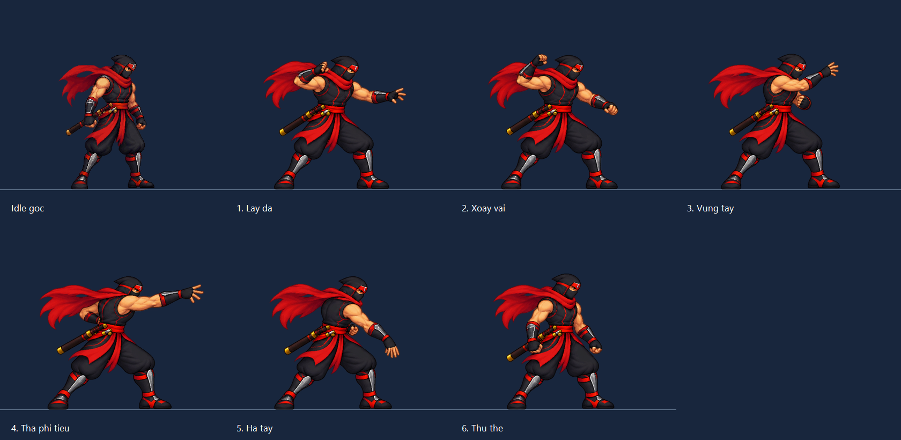

Lấy đà → xoay vai → vung tay → thả phi tiêu → hạ tay → thu thế. Chỉ minh hoạ artwork; chưa áp dụng chuột phải hoặc logic skill. Ninja tham chiếu bên trái giữ nguyên pixel từ atlas đang dùng.
Đang tải ảnh…
Thời lượng và tốc độ bay chỉ để review, chưa chốt gameplay. Vạch ngang là điểm tiếp đất. Có thể dừng và chuyển từng pose để xem tay/chân. Phi tiêu dùng lại artwork đã có.

Preview riêng phi tiêu · Atlas pose · Báo cáo/phạm vi · Prompt và nguồn